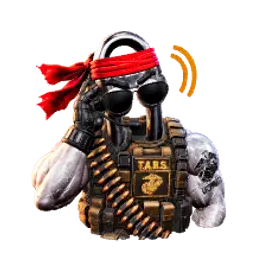

Scout Voice · Hands-free AI companion
Clippy 2.OOHRAH
A wake-word desktop voice assistant with the TARS personality from Interstellar — bolted onto the full power of Microsoft Scout.
"Humor setting: 75%. Honesty: 90%. Both adjustable."

Talk to Scout. Out loud.
Clippy 2.OOHRAH — "TARS Voice" — is a standalone desktop orb that listens for the wake word "TARS," answers in a neural voice, and lets you interrupt it mid-sentence like a real conversation. When a request is bigger than small talk, it hands the job to your full Microsoft Scout agent and reports back. It's Marine-grade: dry wit, zero fluff, always on watch.
Wake word
Say "TARS." No hotkeys, no clicking — it just wakes up and listens.
Speech-to-speech
Azure AI Foundry chat + neural TTS. Ask out loud, get a spoken answer.
Natural barge-in
Talk over TARS and it stops to listen. Echo-cancelled so it never hears itself.
Live web search
Stock prices, trends, news — it searches and answers from real results.
Handoff to Scout
Heavy, multi-step, or destructive work is delegated to your full Scout agent.
Duty modes & ceremonies
Active Duty vs At Ease, animated avatars, and a bugle send-off on shutdown.
Six animated states, one Marine
TARS shows a different animated 3D avatar for whatever it's doing. All six are rendered from the same model so the character stays consistent.
Active Duty
On the clock, ready to work

At Ease
Off duty, just chatting

Listening
Hearing you after the wake word

Thinking
Working it out (Hymn hums low)
Speaking
Talking back

Salute
Shutdown send-off (under Taps)
Avatars & likeness © DaBoostR — CC BY-NC-ND 4.0. Non-commercial, no derivatives.
Two duty modes
Both stay awake and listening. The difference is whether TARS does work or just talks. Switching modes starts a fresh conversation thread.
- On the clock, mission-focused
- Can delegate tasks to Scout — files, email, research, heavy jobs
- Tools: time, calc, web search, fetch, recall, delegate
- Crisp, one or two spoken sentences
- Say: "Active Duty," "Attention," "Back to work"
- Off duty, relaxed companion
- No delegation — tells you to go back on Active Duty for real work
- Tools: time, calc, web search, fetch, recall
- Conversational — asks questions and riffs
- Say: "At Ease," "Stand down," "Off duty"
"Stand down" means At Ease (relax), not shutdown. To exit, say "TARS, shut down."
From your voice to Scout and back
TARS's own toolset is small by design. When a request is bigger, it routes it to the agent that can actually do it — and keeps a live inbox of every job.
You ask
"TARS, email the team last week's pipeline." On Active Duty.
TARS queues it
Writes a job file into the shared ~/.copilot/handoff queue.
Scout works it
Your full Microsoft Scout agent picks it up and runs the task.
Reports back
Result lands in the auto-refreshing Handoff Inbox — and TARS says it's done.
Say the word
| Say | TARS does |
|---|---|
TARS | Wakes up and listens |
| (just start talking while it speaks) | Interrupts — it stops and listens |
At Ease / Stand down / Off duty | Switch to At Ease (stays listening, drops delegation) |
Active Duty / Attention / Back to work | Return to Active Duty (re-enables delegation) |
TARS, shut down | Plays the Salute + Taps send-off and exits |
Install in your Scout
The companion Scout skill does the heavy lifting: it clones the repo, installs dependencies, wires up your Azure AI Foundry resource, and drops the launch shortcuts — all during provisioning. One command, and TARS reports for duty.
In Microsoft Scout, run:
/hydrate-tars
The skill will:
- Clone
daboostr/Microsoft-Clippy-2.OOHRAH - Run
npm installand fetch the avatar + audio assets - Walk you through your Azure AI Foundry + Speech setup into
.env - Create the desktop launch / stop shortcuts
Prefer manual?
git clone https://github.com/daboostr/\ Microsoft-Clippy-2.OOHRAH.git cd Microsoft-Clippy-2.OOHRAH npm install copy .env.example .env & notepad .env az login powershell -ExecutionPolicy Bypass -File .\launch-tars.ps1
Prerequisites: Windows, Node 18+, Azure CLI, and an Azure AI Foundry resource with a chat deployment (e.g. gpt-4.1) + a Speech resource. Auth is Entra ID — no API keys.